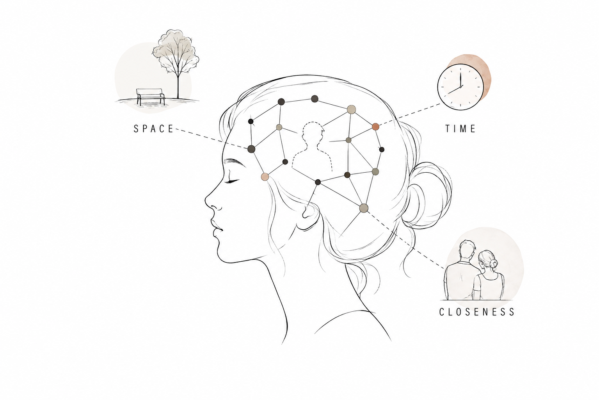
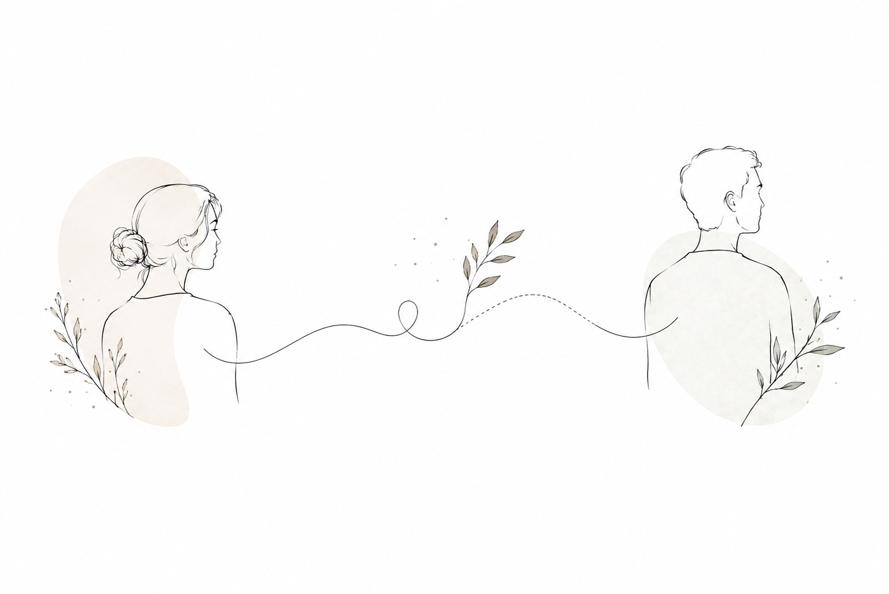
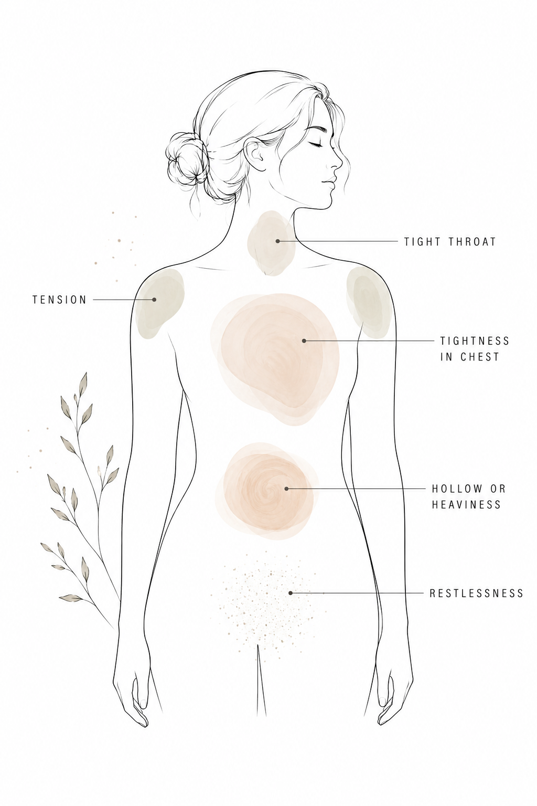
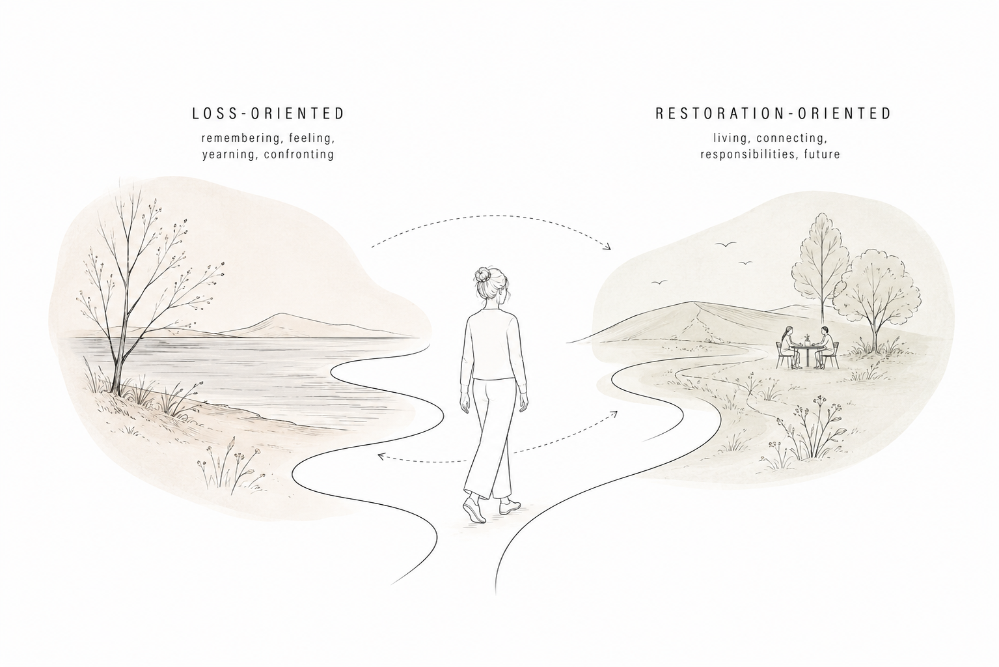
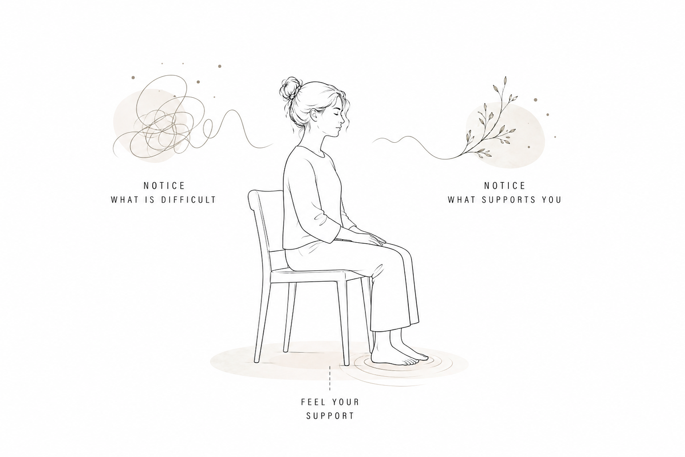
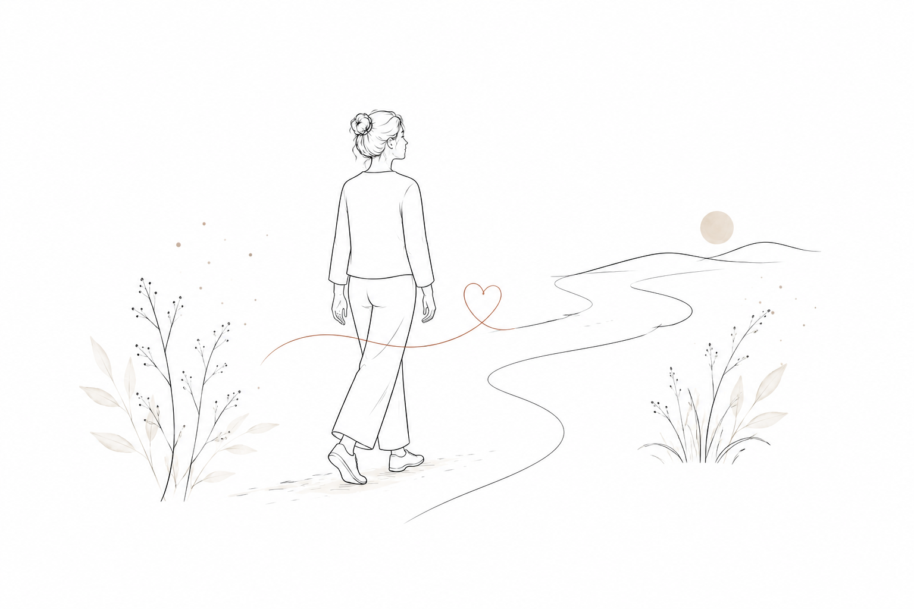

Rouw kan moeilijk te begrijpen zijn.
Je kunt verstandelijk begrijpen dat iemand er niet meer is, en toch merken dat je nog steeds verwacht dat diegene belt. Misschien loop je een kamer binnen en kijk je instinctief of die persoon er is. Of je pakt je telefoon voordat je je herinnert dat je geen bericht meer kunt sturen.
En dan zijn er de lichamelijke ervaringen. De zwaarte op je borst. De vermoeidheid. Een gespannen keel. Slecht slapen. Veranderingen in eetlust. Rusteloosheid. Of het gevoel volledig losgekoppeld te zijn van jezelf.
Dit betekent niet dat je verkeerd rouwt.
Rouw is niet alleen een emotie die zich in je hoofd afspeelt. Het omvat je brein, je lichaam, je herinneringen, hechting en het proces van aanpassen aan een wereld die veranderd is.
Er is geen enkele juiste manier om te rouwen en er is geen tijdlijn die je hoeft te volgen.
Wat gebeurt er in je brein
wanneer je rouwt?
Wanneer we iemand verliezen die belangrijk voor ons is, verliezen we niet alleen een persoon. We verliezen ook een heel netwerk van verwachtingen dat rond die relatie is opgebouwd.
Je brein heeft geleerd:
- waar die persoon meestal is,
- wanneer je normaal contact met diegene hebt,
- hoe die persoon klinkt,
- wat die persoon voor je betekent,
- en hoe het voelt om met diegene verbonden te zijn.
Na een verlies verdwijnen deze verwachtingen niet onmiddellijk, alleen omdat je begrijpt dat de persoon er niet meer is.
Je verstand kan iets begrijpen voordat je brein zich er volledig aan heeft aangepast.
Dit kan helpen verklaren waarom bepaalde ervaringen zo vaak voorkomen tijdens rouw: verwachten dat iemand een bericht stuurt, instinctief naar die persoon zoeken of even vergeten dat diegene er niet meer is.
In zijn Huberman Lab-aflevering over rouw bespreekt neurowetenschapper Andrew Huberman hoe neurale circuits die betrokken zijn bij emotionele en feitelijke herinneringen samenwerken met systemen die betrokken zijn bij liefde en hechting. Dit kan bijdragen aan gevoelens van afwezigheid en verlangen. Hij beschrijft ook hoe we onze voorstelling van een relatie geleidelijk aanpassen, waaronder de associaties met ruimte, tijd en emotionele nabijheid.

Dit betekent niet dat rouw simpelweg een kwestie is van je brein opnieuw "bedraden".
Het betekent dat de realiteit van het verlies en de verwachtingen die je al had geleidelijk met elkaar geïntegreerd moeten worden.
Waarom verwacht je nog steeds
dat die persoon er is?
Een van de vreemdste aspecten van iemand verliezen kan zijn dat je weet dat diegene er niet meer is, terwijl je toch verwacht dat die persoon er zal zijn.
Misschien pak je instinctief je telefoon. Misschien hoor je een bekend lied en denk je onmiddellijk aan die persoon. Of je komt op een plek waar diegene vaak was en verwacht heel even dat je hem of haar zult zien.
Deze momenten kunnen verwarrend voelen, maar ze zijn beter te begrijpen wanneer we kijken naar hoe relaties onderdeel worden van ons dagelijks leven. Een hechte relatie wordt niet opgeslagen als één enkele herinnering. Na verloop van tijd bouwt je brein een uitgebreid netwerk van associaties rond die persoon op: plaatsen, routines, gesprekken, herinneringen en verwachtingen.
Wanneer iemand overlijdt, blijven deze associaties bestaan terwijl de persoon niet langer fysiek aanwezig is. Je bewuste geest kan begrijpen: Hij of zij is er niet meer. Terwijl een ander deel van je brein nog werkt vanuit: Die persoon hoort hier te zijn.
Een deel van rouw bestaat uit het geleidelijk aanpassen van deze verwachtingen aan de nieuwe werkelijkheid.
Dit kan ook helpen verklaren waarom rouw zo'n sterk verlangen kan oproepen. Je herinnert je niet alleen iemand die je mist. Je hechtingssysteem heeft geleerd dat deze persoon belangrijk is, verwacht verbinding met diegene en wordt nu geconfronteerd met het feit dat die relatie niet langer op dezelfde fysieke manier kan plaatsvinden.
Onderzoek naar de neurowetenschap van rouw heeft activiteit gevonden in hersengebieden die betrokken zijn bij beloning en motivatie bij mensen die intense rouw ervaren wanneer zij herinneringen aan de overleden persoon zien. Dit biedt een mogelijke verklaring voor de krachtige aantrekkingskracht naar de persoon die bij rouw kan ontstaan.
Weten dat iemand er niet meer is, schakelt de systemen in je brein die gebouwd zijn rond liefde en verbinding niet automatisch uit.
Rouw verloopt niet
in vijf vaste stappen
Misschien heb je wel eens gehoord van de vijf fasen van rouw:
Dit kader werd geïntroduceerd door psychiater Elisabeth Kübler-Ross in On Death and Dying, op basis van haar werk met mensen die met een terminale ziekte te maken hadden. Later pasten Kübler-Ross en rouwexpert David Kessler het kader toe op rouw na een overlijden in On Grief and Grieving.
De vijf fasen zijn inmiddels een van de bekendste manieren om over rouw te praten. En ze kunnen nuttig zijn als taal om ervaringen te beschrijven die tijdens rouw kunnen ontstaan. Het belangrijke onderscheid is dat ze niet bedoeld zijn als een checklist.
Je hoeft niet alle vijf te ervaren. Je hoeft ze niet in deze volgorde te ervaren. Je kunt tussen verschillende ervaringen heen en weer bewegen, meerdere tegelijk ervaren of merken dat sommige helemaal niet bij jou passen.
Misschien voel je op de ene dag aanvaarding en de volgende dag boosheid. Misschien ervaar je opluchting naast verdriet. Misschien voel je je enkele uren relatief goed en word je vervolgens volledig overspoeld door een herinnering.
Geen van deze ervaringen betekent dat je verkeerd aan het rouwen bent.
En aanvaarding betekent niet noodzakelijk dat je oké bent met wat er is gebeurd. Het kan betekenen dat je geleidelijk erkent wat er is gebeurd en leert leven binnen die nieuwe werkelijkheid.
Je hoeft niet te stoppen met van iemand te houden om te rouwen
Er is ook een belangrijke verschuiving in hoe we kijken naar wat het betekent om "verder te gaan". Verdergaan betekent niet noodzakelijk dat je de relatie achter je laat.
Het concept van continuing bonds beschrijft de manieren waarop mensen een betekenisvolle verbinding kunnen behouden met iemand die is overleden. Bijvoorbeeld door herinneringen, tradities, verhalen, waarden, foto's of persoonlijke rituelen.
Onderzoek laat niet zien dat deze blijvende verbondenheid altijd helpend of altijd schadelijk is. Een systematische review van 79 studies vond dat continuing bonds zowel samen kunnen hangen met troost als met verdriet, en ook met vragen rond identiteit en hoe iemand zijn of haar relatie met de overledene begrijpt.

Misschien is de vraag daarom niet: "Hoe stop ik met hem of haar missen?"
Misschien is de vraag eerder: "Hoe leer ik met dit verlies te leven, terwijl de relatie betekenisvol mag blijven?"
Rouw gaat niet noodzakelijk over het loslaten van de persoon.
Het kan gaan over leren de relatie op een andere manier met je mee te dragen.
Waarom kan rouw
zo lichamelijk voelen?
Rouw blijft niet netjes binnen je gedachten. Het kan invloed hebben op je slaap, eetlust, energie, concentratie en de manier waarop je je lichaam ervaart.
Je kunt bijvoorbeeld merken:
- zwaarte of spanning op je borst
- een brok of spanning in je keel
- vermoeidheid of weinig energie
- veranderingen in eetlust
- moeite met slapen
- hoofdpijn of ander lichamelijk ongemak
- rusteloosheid
- een verdoofd of losgekoppeld gevoel
- moeite met concentreren

Onderzoek naar rouw ondersteunt een verband tussen rouw en lichamelijke gezondheid, vooral wanneer rouw langdurig of zeer intens wordt. Een systematische review uit 2025 over prolonged grief disorder vond verbanden met slapeloosheid, lichamelijke klachten, bloeddruk en andere gezondheidsuitkomsten. Tegelijkertijd benadrukt het onderzoek dat er meer onderzoek nodig is om de onderliggende mechanismen volledig te begrijpen.
De ervaring verschilt van persoon tot persoon.
En ik vind het belangrijk om te benadrukken dat niet elke lichamelijke sensatie tijdens rouw hoeft te worden verklaard als "ontregeling van het zenuwstelsel".
Het zenuwstelsel speelt zeker een rol in onze reactie op stress en emoties, maar rouw is veel complexer dan één biologische toestand.
In plaats van vooraf te bepalen wat je lichaam zou moeten doen, kan het nuttiger zijn om er met nieuwsgierigheid naar te kijken:
Wat merk ik op dit moment eigenlijk?
Rouw en
het dagelijks leven
Een invloedrijk model om rouw te begrijpen is het Dual Process Model of Coping with Bereavement, ontwikkeld door onderzoekers Margaret Stroebe en Henk Schut aan de Universiteit Utrecht.
In plaats van rouw te beschrijven als een reeks fasen, beschrijft het model een beweging tussen twee brede manieren van omgaan met verlies.

Verliesgericht
Je richt je op het verlies zelf: herinneringen aan de persoon, verdriet, verlangen en het onder ogen zien van wat er is gebeurd.
Herstelgericht
Je richt je op het leven: praktische verantwoordelijkheden, nieuwe routines, tijd doorbrengen met anderen en bezig zijn met het leven buiten het verlies.
Het belangrijkste is de beweging tussen beide.
Je kunt een middag huilen om iemand die je verloren bent en diezelfde avond met een vriend gaan eten. Je kunt je enkele uren relatief normaal voelen en vervolgens plotseling overspoeld worden door een herinnering.
Beide ervaringen kunnen naast elkaar bestaan. Je hoeft niet iedere minuut aan je verlies te denken om aan het rouwen te zijn.
Momenten waarop je even afstand neemt van je verdriet kunnen ook onderdeel zijn van het rouwproces.
Wat kan daadwerkelijk helpen
wanneer je rouwt?
Er bestaat geen oefening die rouw kan laten verdwijnen. En ik zou voorzichtig zijn met iedereen die dat belooft. Maar er zijn wel manieren om jezelf te ondersteunen terwijl je je aanpast aan de realiteit van het verlies.
1. Laat rouw en het dagelijks leven naast elkaar bestaan
Je hoeft niet te kiezen tussen rouwen en leven. Je kunt 's ochtends huilen en diezelfde avond met een vriend lachen. Je kunt een goede dag hebben en iemand nog steeds diep missen.
Je kunt een pauze nemen van het nadenken over het verlies zonder de persoon die je bent kwijtgeraakt achter je te laten.
Vraag jezelf eens:
Heb ik op dit moment wat ruimte nodig voor mijn verdriet, of heb ik juist wat ruimte nodig van mijn verdriet?
Beide antwoorden zijn oké.
2. Merk op waar rouw zich in je lichaam laat voelen
Je hoeft niet te veranderen wat je voelt. Merk het alleen op.
Neem even de tijd en vraag jezelf:
Waar merk ik mijn verdriet op dit moment in mijn lichaam?
Misschien merk je:
- Een zwaar gevoel op je borst.
- Spanning in je keel.
- Een hol gevoel in je buik.
- Warmte rond je gezicht.
- Onrust in je benen.
- Of misschien merk je helemaal niets. Ook dat is oké.
Als je een lichamelijke sensatie opmerkt, blijf er dan een paar momenten bij zonder te proberen deze te laten verdwijnen.
Je kunt jezelf vragen:
- Is het zwaar of licht?
- Warm of koud?
- Stil of in beweging?
- Verandert het wanneer ik er aandacht aan geef?
Het gaat hier niet om het "loslaten van rouw uit het lichaam". Het is simpelweg een kans om te oefenen met je ervaring opmerken zonder deze onmiddellijk te hoeven veranderen.

Een eenvoudige oefening om te proberen
Als dit voor jou prettig voelt, neem dan even de tijd om ergens rustig te zitten.
Zet je voeten op de grond.
Kijk om je heen en merk op waar je bent.
Breng vervolgens je aandacht naar je lichaam. Je hoeft je ademhaling niet te veranderen.
Merk eenvoudig op:
Wat merk ik op dit moment?
Misschien is er verdriet.
Misschien is er spanning.
Misschien merk je niets bijzonders.
Merk vervolgens iets op dat je op dit moment ondersteunt: de stoel onder je, je voeten op de grond, de temperatuur van de kamer of een vertrouwd geluid.
Breng je aandacht een paar momenten heen en weer tussen wat moeilijk is en wat je ondersteunt.
Je probeert het verdriet niet weg te krijgen.
Je geeft jezelf simpelweg toestemming om op te merken dat meerdere dingen tegelijkertijd kunnen bestaan.
Je kunt iemand missen en tegelijkertijd je voeten op de grond voelen.
Je kunt verdriet voelen en tegelijkertijd warmte opmerken.
Je kunt rouwen en toch hier zijn.
3. Geef jezelf kleine momenten van herstel
Wanneer je rouwt, kunnen alledaagse taken opeens vreemd moeilijk voelen.
- Koken.
- Naar je werk gaan.
- Berichten beantwoorden.
- Naar buiten gaan.
- Vrienden zien.
Je hoeft niet alles te doen.
Begin bij de basis.
- Eet iets.
- Neem een douche.
- Maak een korte wandeling.
- Bel iemand die je vertrouwt.
- Ga tien minuten naar buiten.
Deze dingen zijn geen manieren om "verder te gaan". Ze zijn manieren om voor jezelf te blijven zorgen terwijl je door iets pijnlijks heen gaat.
Je mag momenten hebben waarop je niet aan de persoon die je verloren bent denkt.
4. Maak ruimte voor verbinding
Rouw kan eenzaam zijn. Soms weten andere mensen niet wat ze moeten zeggen, en weet jij misschien zelf niet wat je van hen nodig hebt.
Je hebt niet per se iemand nodig die ervoor zorgt dat je je beter voelt. Misschien heb je simpelweg iemand nodig die bij je kan zijn.
Je zou tegen iemand kunnen zeggen:
"Ik heb geen advies nodig. Ik wil vandaag gewoon niet alleen zijn met dit verdriet."
"Mag ik je een verhaal over die persoon vertellen?"
Verbinding neemt je verdriet niet weg. Maar je hoeft het niet volledig alleen te dragen.
Hoe kan somatische
counselling helpen bij rouw?
Rouw is geen probleem dat opgelost moet worden. Het doel is niet om ervoor te zorgen dat je iemand niet meer mist, herinneringen uit te wissen of een vooraf bepaalde staat van "aanvaarding" te bereiken.
In somatische counselling kunnen we in plaats daarvan nieuwsgierig worden naar hoe het verlies wordt ervaren in je lichaam, je emoties en je dagelijks leven.
Misschien merk je spanning op je borst wanneer je over iemand praat die je bent verloren.
Misschien voel je warmte wanneer je aan een bepaald moment terugdenkt.
Misschien merk je dat je overspoeld raakt en de neiging hebt om je af te sluiten.
Of misschien voel je helemaal niet zoveel in je lichaam.
Er is geen juiste reactie.
Het proces kan rustig en samenwerkend zijn. Afhankelijk van wat passend voelt, kan een sessie bestaan uit gesprekken, het opmerken van lichamelijke sensaties, zachte beweging, grounding of het onderzoeken van een herinnering terwijl we aandacht hebben voor wat er in je lichaam gebeurt.
We hoeven geen emotionele ervaring te forceren.
En we hoeven rouw niet te veranderen in iets dat "gerepareerd" moet worden.
In plaats daarvan kunnen we ruimte creëren om beter te begrijpen wat je ervaart en manieren te vinden om ermee om te gaan die haalbaar voelen.
Als rouw extreem intens blijft of je dagelijks functioneren langdurig sterk beïnvloedt, kan het ook belangrijk zijn om gespecialiseerde psychologische ondersteuning te zoeken. Prolonged Grief Disorder (PGD), ook wel persisterende complexe rouw genoemd, wordt erkend in de DSM-5-TR en ICD-11. Er bestaan hiervoor behandelingen die wetenschappelijk onderbouwd zijn.
Somatische counselling is geen vervanging voor gespecialiseerde behandeling wanneer er sprake is van een klinische stoornis.
Rouw heeft
geen eindpunt
Misschien is een van de moeilijkste aspecten van rouw accepteren dat er misschien nooit een moment komt waarop je je plotseling volledig "eroverheen" voelt.
Je relatie verandert.
Je leven verandert.
En na verloop van tijd leer je misschien om het verlies op een andere manier met je mee te dragen.
Misschien kun je weer lachen zonder je schuldig te voelen. Misschien zijn er dagen waarop je niet aan die persoon denkt.
En dan kan een lied, een geur, een plek of een bepaalde datum alles weer naar boven brengen.
Dat betekent niet noodzakelijk dat je achteruit bent gegaan.
Rouw gaat niet over iemand vergeten. Het gaat over leren leven in een wereld die veranderd is omdat die persoon er niet meer in is.
Je hoeft niet alles in één keer uit te zoeken.

Als je door rouw gaat
Je hoeft niet precies te weten wat je nodig hebt voordat je contact opneemt.
Somatische counselling kan een ruimte bieden om te vertragen, te praten over wat je ervaart en te onderzoeken hoe rouw zich zowel in je lichaam als in je leven laat zien.
Ik bied trauma-geïnformeerde somatische counselling aan in Amsterdam en online, in het Nederlands en Engels.
AFSPRAAK MAKEN →Bronnen & verder lezen
Het werk van Kübler-Ross en Kessler paste het vijf-fasenmodel aan voor rouw na een overlijden. Kessler benadrukt dat de fasen geen lineaire tijdlijn of checklist vormen, maar een kader kunnen bieden om ervaringen te herkennen die tijdens rouw kunnen voorkomen.
Dit invloedrijke model beschrijft de beweging tussen verliesgerichte en herstelgerichte manieren van omgaan met rouw.
Een systematische review naar de verschillende manieren waarop een blijvende band met een overledene verband kan houden met het aanpassen aan een verlies.
Een systematische review naar verbanden tussen prolonged grief disorder en lichamelijke en somatische gezondheidsuitkomsten.
Andrew Hubermans bespreking van de neurowetenschap van rouw, hechting, verlangen en het aanpassen van onze representaties van relaties na een verlies.